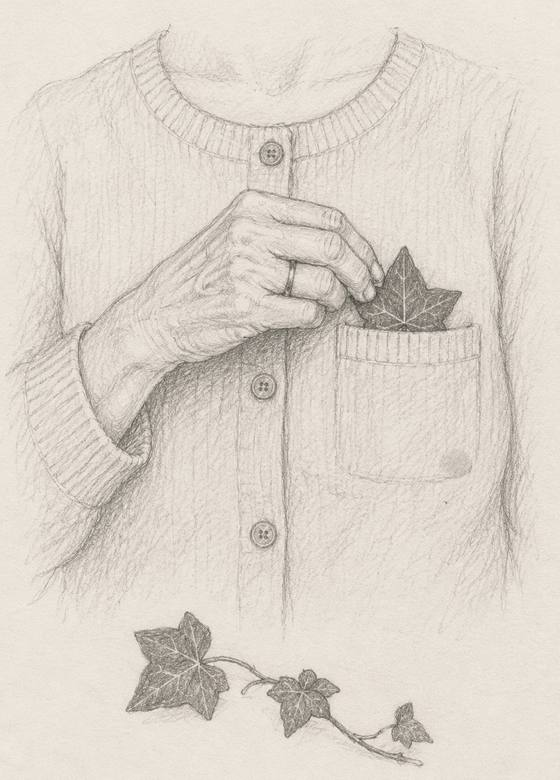

|
Some days, there’s only one voice you want to hear.
Not your sister’s. Not your friend’s. His.
Will he call?
Will he text first? Is he busy, or is he done with me?
And if there’s no one right now, maybe there’s a voice you still miss.
The usual advice is to stop checking your phone. (Has that ever worked for anyone?)
But women once had another way through the waiting. There’s a good chance it’s growing on a wall near you.
A leaf of ivy.
I call it the First Voice Ritual.

Here’s how the old ritual goes.
Pick one leaf of ivy. Tuck it in close, over your heart. Then say the old words. A schoolgirl in Lanarkshire, Scotland, gave them like this, in a 1959 book of children’s folklore:
“Ivy, ivy, I love you, / In my bosom I put you. / The first young man who speaks to me / My future husband he shall be.”
The old ritual says the first young man who speaks to you is the one.
The girl added a warning: “I do not think that all people conform to this rule as it is rather risky.”
Rather risky! She had a point.
For most of us, the first man who speaks to us all day is the postman. Or the man at the bakery, asking if we’d like it sliced.
Here’s what I love about it, though. For one morning, that leaf makes you notice every man who speaks to you. The neighbour. The man who holds the door.
Most days, we hardly hear them. We’re too busy listening for one voice.
If you only listen for one voice, you miss the ones already talking to you.
So ask yourself three things.
1. The rhyme counts the first man who speaks. Today, did you check your phone for him before you’d said hello to anyone?
2. The rhyme counts any man who speaks. This week, did someone talk to you while you were only half listening?
3. The leaf goes over your heart. Have you been keeping that spot for someone who rarely calls?
A yes to even one doesn’t make you foolish. It just means you’ve been waiting a while.
Now, here’s the thing.
The ivy tells you who spoke first. It can’t tell you whether to listen.
Should you keep waiting for him? Is someone already talking to you that you haven’t really heard? Is it time you listened to your own voice for a change?
And that part isn’t in this email.
Leave it to the leaf, and here’s what happens. He texts first thing. You take it as a sign. And you wait six more months, a dry leaf in your pocket.
So, two doors.
Door one: try it tomorrow. Tuck a leaf in first thing and say the words. Then come and tell me who spoke to you first, and who you hoped it would be.
Door two: skip the ivy. No ivy nearby? Feel silly talking to a leaf? Just come and tell me whose voice you’ve been waiting for. No one right now? Tell me whose voice you’d love to hear.
Leaf or no leaf, you’ll find me in the same place.
Evelyn, I want to know whose voice to listen for →
Waiting on one message is lonely work.
You carry the phone from room to room. You read his last text again, looking for clues.
That doesn’t make you needy. It just means he matters to you.
And a lot of us have let a whole evening slip by, waiting on one little buzz.
Never been in my chat before? The first 3 minutes are yours, free.
The old rhyme doesn’t ask for a full moon or a special night. So you don’t have to wait for one either.
Tell Evelyn whose voice I’m waiting for →
— Evelyn
P.S. In Donegal, in Ireland, the old words were a bit more forgiving. There, the first young man who speaks to you “shall bear my truelove’s name.” He doesn’t have to be the one. He only has to share the name. So if the baker’s called Tom, keep an eye out for a Tom. Start here.
|